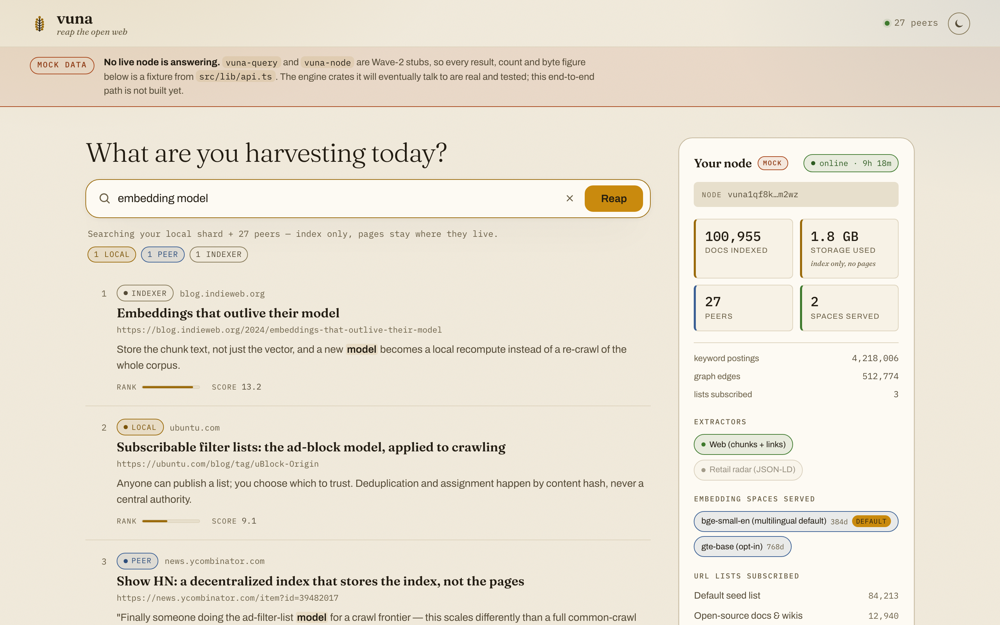
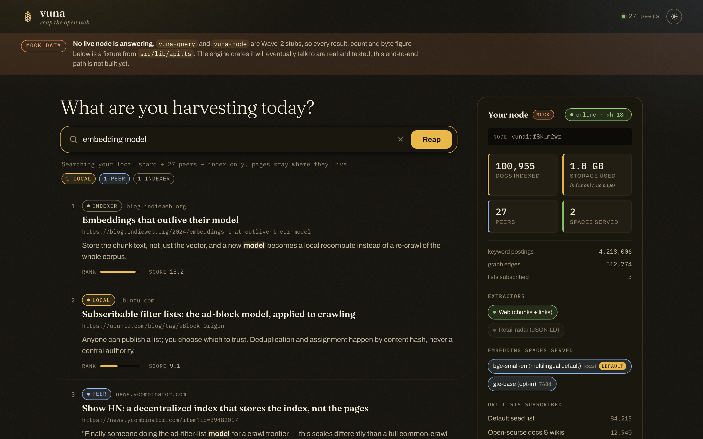
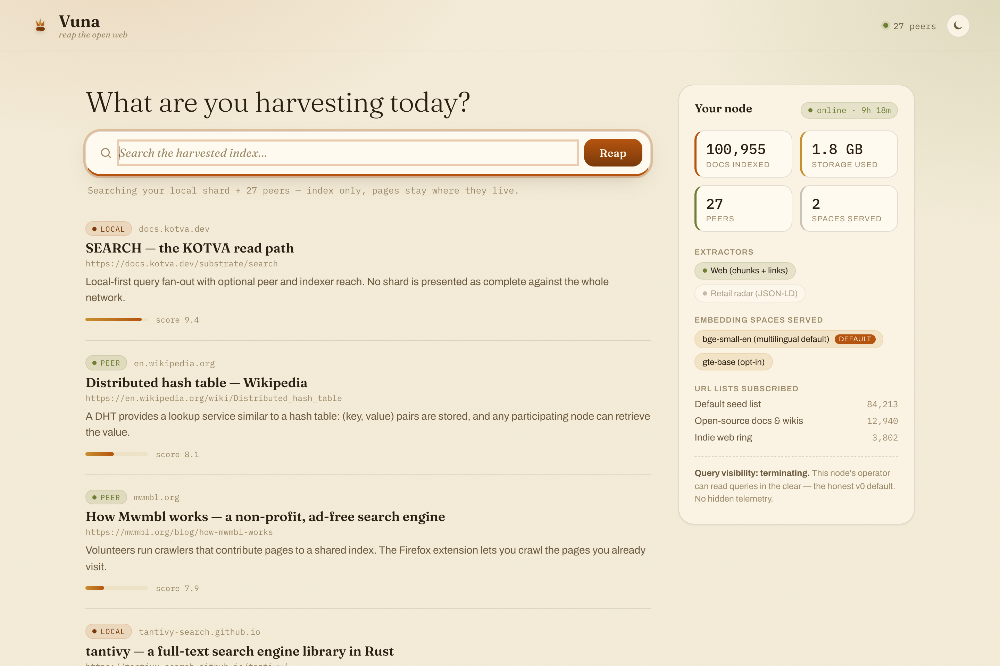
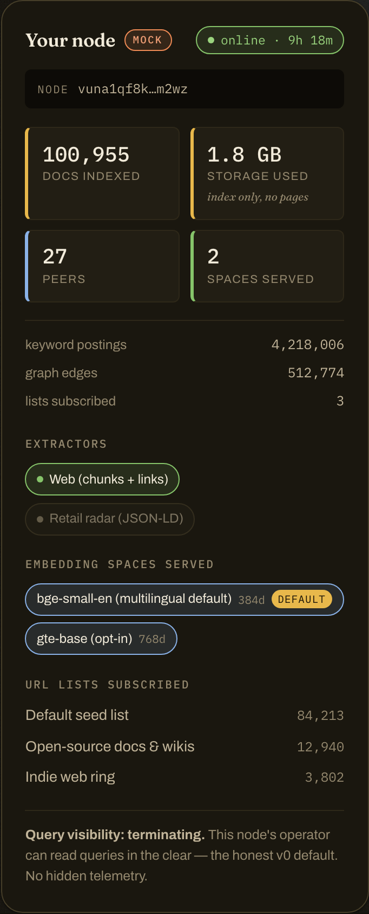

Keep the tally, not the field.
A decentralized crawl → extract → index engine that stores the index, not the pages. Vuna is Swahili for to harvest, to reap.
Volunteer nodes crawl a distributed, subscribable list of URLs, run pluggable extractors over each page, and contribute the result — keyword postings, vector embeddings, link-graph edges, a snippet, and a pointer back to the live URL — into a shared index replicated across the network. The page body is never archived, which is what collapses storage from datacenter scale to roughly 2 GB per volunteer node at billion-page scale. One engine, two verticals so far — web search/RAG and retail price-radar — on the KOTVA substrate's identity, PUB, DHT and SEARCH primitives. No token, no page archive, no new crypto.
Built and tested against its own fixtures. You can run it today.
Specified in the design docs, absent from the tree. A Wave-2 stub.
The screen renders; the numbers behind it are fixtures, not a live node.
An argued property of the design. Nothing has demonstrated it at scale.


vuna-query and vuna-node are Wave-2 stubs, so every number in this shot is a fixture. See status.Four objects. That's the whole system.
Crawl, extract and index are three separable stages joined by seam traits in vuna-core. A new embedding model, a new vertical or a new ranking strategy is a new implementation of an existing trait — not a fork of the engine.
URL list
A signed, versioned, subscribable list of URLs — the ad-filter-list model applied to a crawl frontier. Anyone can publish one; you choose which to trust. Deduped and DHT-assigned across nodes.
Embedding space
A recognized model index, model_id@dim/quant. Each is an independent parallel space; the keyword index and graph stay model-agnostic and shared. New model → new space, adopted opt-in, never a fleet-wide flag day.
Index shard
Derived per-node state: postings, vectors per space served, graph edges, a snippet, a pointer to the live URL — and the chunk text, which is what makes re-embedding a local recompute instead of a re-crawl.
Node descriptor
Which lists this node subscribes to and which spaces it serves. A node running one list, the default space and the web extractor is already a complete participant.
No page archive
Only postings, vectors, graph edges, a snippet and a pointer back to the live URL. The author's copy stays the only copy, and the index is derived, rebuildable, never authoritative — on any disagreement the author's signed content wins.
Quorum where nobody signs
In the retail vertical the store is a non-participant that signs nothing, so agreement across k distinct, anchored observers is the only ground truth. vuna-core::quorum is built and tested; one observer cannot stuff the ballot.
KOTVA, not new crypto
Identity, PUB, DHT and SEARCH all come from the substrate. vuna-node is the only crate that binds it, which is why the rest of the workspace compiles and tests fully offline.
| Corpus | One copy | ×3 redundant / 10k nodes |
|---|---|---|
| 1 billion pages | ~6 TB | ~1.8 GB / node |
| 10 billion pages (Google-ish) | ~60 TB | ~18 GB / node |
Keyword ~2 KB · embeddings (int8) ~2.5 KB · graph ~0.3 KB · metadata ~0.7 KB. These are budgets derived from the design, not measurements of a running network — there isn't one. Compute, not storage, is the recurring cost, and the honest trade-offs (compute-vs-disk volunteer supply, Sybil resistance at small scale, freshness) are in viability. Read it before believing the pitch.
No global score — so there is no position to sell.
The searcher runs their own node, and ranking is local-first: your shard answers first, always, offline-safe. Peer and indexer reach is layered on top and merged with Min-PPR over your link graph and your subscriptions. No network-wide authority computes one number per document, so there is no ranking slot anyone could auction — and an opt-in indexer adds reach without ever becoming authoritative (KOTVA SEARCH's SRCH-2: the index is derived, rebuildable, never authoritative).
- localAnswered from your own shardAlways available, offline-safe, and first. Gold means "yours" — nothing else on this page is gold.
- peerReached over the mesh from another volunteer nodeAdds coverage you have not crawled. Merged into your ranking, never over it.
- indexerAn opt-in global indexer coordinatorDeliberately uncoloured. An indexer adds reach and never authority, and the palette says so by omission.
vuna-query — is a Wave-2 stub. The contract it will implement (query::QueryEngine, Source, RankedHit) is frozen and tested in vuna-core; the fan-out and the Min-PPR merge are not written yet.v0 preview — honest about what's real.
132 tests green describes what compiles and behaves against its own fixtures. It is not 132 features shipped. Four of the six stage crates are implemented; there are zero live nodes and zero real users today.
| Component | What it does | State | Tests |
|---|---|---|---|
| vuna-core | Frozen contract — types, seam traits, the retail quorum reconciler. | done | 19 |
| vuna-crawl | Polite fetch — robots.txt, per-host rate limiting, body caps. | done | 24 |
| vuna-extract | web (chunks + links) and retail (JSON-LD/OG) extractors, plus the interpreter for declarative adapters/*.toml. | done | 67 |
| vuna-index | tantivy BM25 + per-space HNSW vectors + link graph. | done | 9 |
| vuna-frontier | Distributed URL lists, dedup, DHT assignment. | done | 12 |
| vuna-query | SEARCH read path — local-first + fan-out + Min-PPR merge. | stub · wave 2 | — |
| vuna-node | Daemon + kotva-core binding — the crawl→extract→index→publish loop. | stub · wave 2 | — |
| app/ | Tauri v2 desktop node (React). Builds and runs. | mock data | — |
It does not yet crawl-to-query end to end. The substrate contract and four of the six stage crates are implemented and tested; the desktop app builds and runs on mock data. Until vuna-node lands, nothing here is fed by a live crawl — including the adapters. See architecture for the crate-by-crate detail and viability for the two open risks — compute-volunteer supply and small-network Sybil resistance — neither of which this design claims to have solved.
The reference client, running on fixtures.
The desktop app is one screen today: a search box over local and peer results, and a node panel that surfaces exactly what your box is doing — no hidden telemetry. These are real screenshots of the real UI. The corpus behind them is a mock, and the app says so on screen, in the app.


mock chip so the crop cannot be quoted out of context.One Cargo workspace. One Tauri app.
No Docker, no database server, no keys and no network access are required to run the tests. vuna-core keeps minimal dependencies; tantivy, HNSW, reqwest and the embedding runtimes live only in the crate that needs them.
git clone https://github.com/vul-os/vuna cd vuna # the engine — offline, no network, no keys cargo test --workspace # 132 tests green cargo build --workspace # the desktop app — mock data today, real UI cd app && npm install npm run tauri dev # or: npm run dev (plain Vite)
- 1BuildRust 1.75+ and Node for the desktop shell. Everything except
vuna-nodecompiles without the substrate. - 2Test the engine
cargo test --workspaceruns all 132 tests across core, crawl, extract, index and frontier.vuna-queryandvuna-nodeare stubs and are not exercised end to end. - 3Preview the appThe Tauri shell runs against a mock corpus —
app/src/lib/api.tsfalls back to it whenever there is no live daemon, and the UI shows a mock-data banner the whole time it does.
What this page does not claim.
The design docs are longer than the code. That is the accurate state of the project, and hiding it would make everything above worth less.
- not builtThe end-to-end path
There is no crawl → extract → index → query round trip.
vuna-queryandvuna-nodeare Wave-2 stubs; the four implemented crates are exercised against their own fixtures, not against each other over a network. - not builtA live network
Zero nodes, zero users, zero bytes of real index. Every number in the screenshots above comes from the fixtures in
app/src/lib/api.tsandapp/src-tauri/src/commands.rs. - boundedAdapter coverage
The
adapters/*.tomlinterpreter ships with three worked manifests. The format still cannot express secondary lookups, derived fetches or multi-offer aggregation, and a manifest that exceeds those bounds is rejected at load with a reason rather than silently degraded — the exact boundary is in adapters/README.md. - unsolvedTwo open risks
Compute-volunteer supply — embedding, not disk, is the recurring cost — and Sybil resistance at small network sizes. Neither is solved here; both are argued honestly in viability.
- scopedThe open web is not a v1 promise
v1 targets a bounded corpus — a federation's content or a curated vertical — where crawl is cheap and Sybil is dodged via KOTVA's vetted operators. The open web is a later research track.
Part of Vulos
Vulos is a family of open, self-hostable apps. Vuna is fully standalone — it never requires Vulos infrastructure to run a node or the desktop app — and it shares its identity / DHT / PUB substrate, KOTVA, with siblings like envoir. No hub, no account, no coupling.
Explore Vulos →